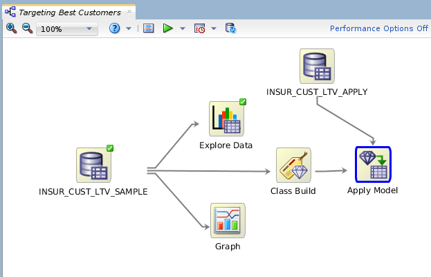
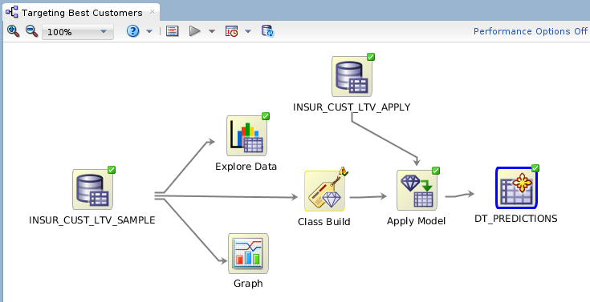
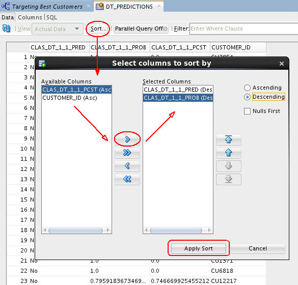

Apply
a Decision Tree Model
Apply
a Decision Tree Model Before You Begin
Before You Begin
This 15-minute tutorial shows you how to apply a decision tree model and create a table to display the results by using the Data Miner graphical user interface.
Background
The Workflow creation process of Oracle Data Miner automates many of the difficult tasks during the building and testing of models. It’s difficult to know in advance which algorithms will best solve the business problem, so normally several models are created and tested. No model is perfect, and the search for the best predictive model is not necessarily a question of determining the model with the highest accuracy, but rather a question of determining the types of errors that are tolerable in view of the business goals.
What Do You Need?
- Oracle Database 19c Enterprise Edition
- Oracle SQL Developer version 19.x
- Oracle Data Miner User Account
- Oracle Data Miner Project and Workflow
- A Data Miner Decision Tree Classification Model Built from the INSUR_CUST_LTV_SAMPLE data
 Choose
A Model
Choose
A Model
- In the workflow, select the Class Build node. Then, using
the Models section of the Properties tab, deselect all of the
models except for the DT model.
To deselect a model, click the large green arrow in the model's Output column. This action adds a small red "x" to the column, indicating that the model will not be used in the next build.
- Add a new Data Source node in the workflow.
Note: Even though we are using the same table as the "Apply" data source, you must still add a second data source node to the workflow.
- In the Define Data Source wizard, select the INSUR_CUST_LTV_SAMPLE table, and then click FINISH.
- Click on the the new data source node name in the workflow. Then, change the node name to INSUR_CUST_LTV_APPLY.
- Expand the Model Operations category in the Components tab.
- Rename the Apply node to Apply Model.
- Connect the Class Build node to the Apply Model node.

Description of the illustration apply-model-setup.png The yellow exclamation mark disappears from the Apply node border once the second link is completed. This indicates that the node is ready to be run.
 Specify
the Output and Run the Model
Specify
the Output and Run the Model
Before you run the apply model node, consider the resulting output. By default, an apply node creates two columns of information for each customer: the prediction (Yes or No); and the probability of the prediction.
However, you really want to know this information for each customer, so that you can readily associate the predictive information with a given customer.To get this information, you need to add a third column to the apply output: CUSTOMER_ID.
- Right-click the Apply Model node and select Edit.
- In the Predictions tab of the Edit Apply Node window, select CUSTOMER_ID as the Case ID.
- Click OK.
- Right-click the Apply Model node and select Run
from the menu.
When the process is complete, green check mark icons are displayed in the border of all workflow nodes to indicate that the server process completed successfully.
 Create
a Database Table to Store the Results
Create
a Database Table to Store the Results
- Using the Data category in the Components pane, drag the Create Table or View node to the workflow window.
- Connect the Apply Model node to the OUTPUT node.
- specify a name for the table that will be created:
- Right-click the OUTPUT node and select Edit from the menu.
- In the Edit Create Table or View Node window, change the default table name to DT_PREDICTIONS.
- Click OK.
- Right-click the DT_PREDICTIONS node and select Run
from the menu.

Description of the illustration create-table.png After you run the OUTPUT node (DT_PREDICTIONS), the table is created in your schema.
 View
the Results
View
the Results
- Right-click the DT_PREDICTIONS Table node and select View Data from the Menu.
- Sort the table results on any of the columns using the Sort button:
- The Predicted outcome (CLAS_DT_1_1_PRED), in Descending order (meaning that the prediction of "Yes" for buying insurance is first.
- Prediction Probability (CLAS_DT_1_1_PROB), in Descending order (meaning that the highest prediction probabilities are at the top of the table display.
- Click Apply Sort to view the results.
- When you are done viewing the results, dismiss the tab for the DT_PREDICTIONS table, and click Save All.
